fs::dir_tree(recurse = TRUE)Binderising R projects with holepunch
What is mybinder?
In a nutshell, mybinder provides a way for taking the static contents of a repository on, for example, GitHub and launching them in an interactive environment in the browser!

Figure credit: Juliette Taka, Logilab and the OpenDreamKit project
To do so, repository owners add configuration files according the type of environment they wish to create which software called repo2Docker can use to create the specified computational environments. Here’s the full list of configuration files that docker2repo recognises.
To avoid confusion, let’s disambiguate some terms before moving on:
Disambiguation
In this section, there are some related terms, which will be outlined here for clarity:
Project Binder: An open community that makes it possible to create sharable, interactive, reproducible environments. The technological output of this project is a BinderHub.
BinderHub: A cloud-based infrastructure for generating Binders. The most widely-used is mybinder.org, which is maintained by the Project Binder team. It is built upon a range of open source tools, including JupyterHub, for providing cloud compute resources to users via a browser; and
repo2docker, for building docker images from projects. Since it is an open project, it is possible to create other BinderHubs which can support more specialised configurations. One such configuration could include authentication to enable private repositories to be shared amongst close collaborators.A Binder: A sharable version of a project that can be viewed and interacted within a reproducible computational environment running in the cloud via a web browser. By automating the installation of the computing environment (as discussed in the Reproducible Environments chapter), Project Binder transforms the overhead of sharing such an environment into the act of sharing a URL.
mybinder.org: A public and free BinderHub. Because it is public, you should not use it if your project requires any personal or sensitive information (such as passwords).
Binderize: The process of making a Binder from a project.
Disambiguation taken for the Turing Way chapter on Binder.
What is holepunch
holepunch is an R package by Karthik Ram that helps automate the process of binderising an R project. It provides functions for creating the configuration files required to binderise and R project.
Workshop materials
Today we’ll be working with a subset of materials from the published compendium of code, data, and author’s manuscript:
Carl Boettiger. (2018, April 17). cboettig/noise-phenomena: Supplement to: “From noise to knowledge: how randomness generates novel phenomena and reveals information” (Version revision-2). Zenodo. http://doi.org/10.5281/zenodo.1219780
accompanying the publication:
Carl Boettiger  . From noise to knowledge: how randomness generates novel phenomena and reveals information. Published in Ecology Letters, 22 May 2018 https://doi.org/10.1111/ele.13085
. From noise to knowledge: how randomness generates novel phenomena and reveals information. Published in Ecology Letters, 22 May 2018 https://doi.org/10.1111/ele.13085

The materials have been compiled into a research compendium containing all data and code associated with the referenced publication, as well as a paper written in Rmarkdown which can be knitted to pdf, ready for submission to Ecology Letters.
The materials are available on GitHub as a template repository.
Copy compendium template (GitHub)
To access the materials, first head to:
https://github.com/r-rse/holepunch-compendium-tmpl
Next, click on Use this template > Create a new repository

Complete new repo details (GitHub)
Next, complete the details for your copy of the repository:
Repository name:
holepunch-compendiumDescription:
Binderised Research Compendium in R created using holepunch
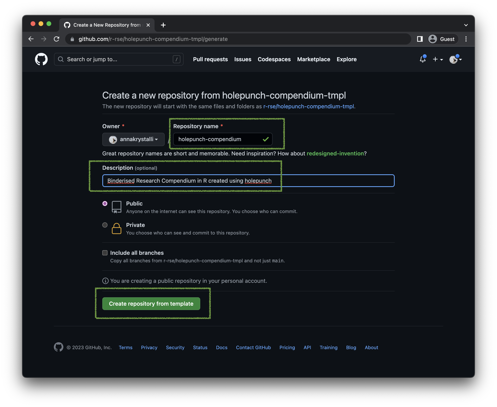
Finally, click on Create repository from template to create your repo.
Clone repo
Once you’ve created your repo on GitHub, you’ll need to clone it to work with it locally.
Copy URL (GitHub)
First click on Code and click on the clipboard icon on the HTTPS panel to copy the URL.
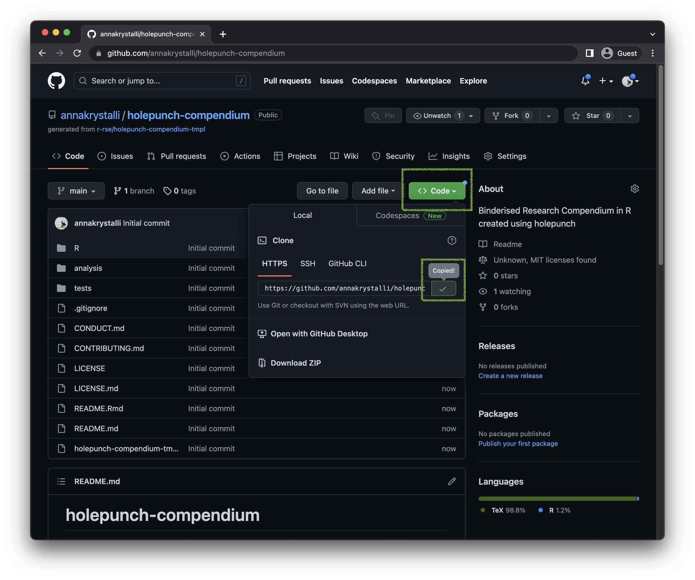
Next let’s move to RStudio.
Create New RStudio Project (RStudio)
We’ll start by creating a new project using:
File > New Project
This opens up the New Project Wizard. Select Version Control as the source for our new project.
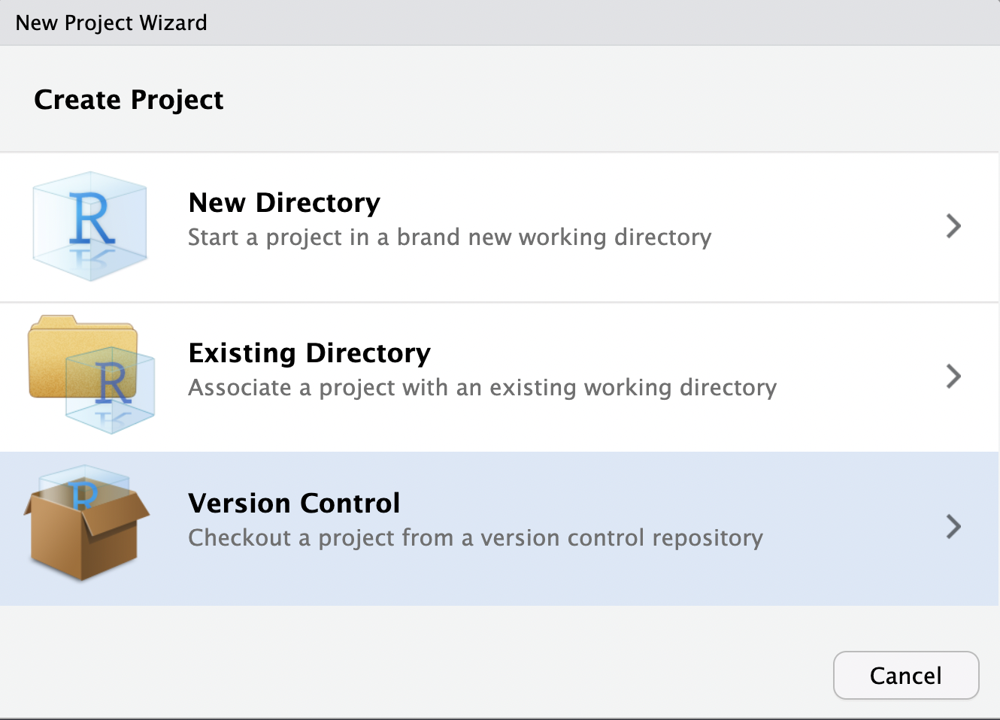
Next select Git:
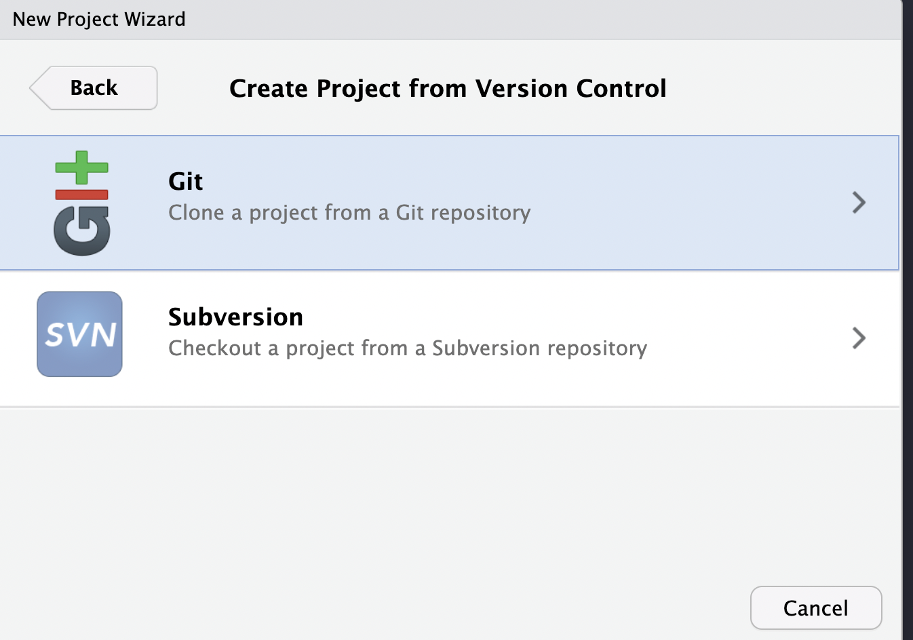
Finally:
Paste the URL of the repo you copied form GitHub in Repository URL.
Select a destination for the cloned repo. I’m choosing to clone it to my Desktop.
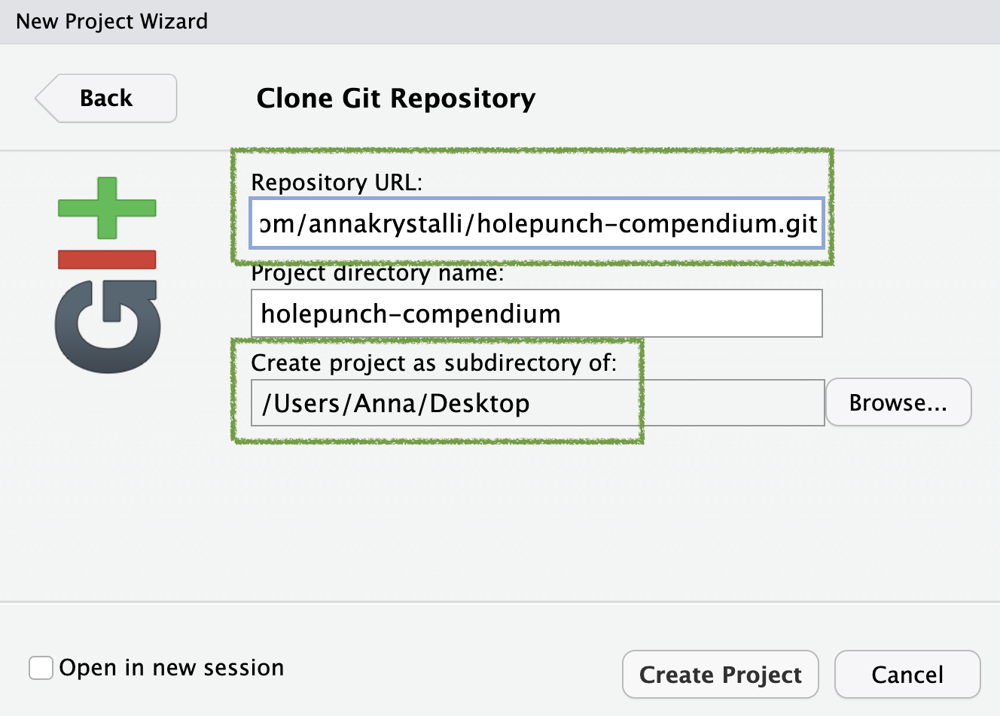
Click on Create Project which will clone the repository from GitHub and launch the new project in RStudio.

Let’s use the dir_tree() function in package fs to examine the contents of the repository. The main files of interest are highlighted:
.
├── CONDUCT.md
├── CONTRIBUTING.md
├── LICENSE
├── LICENSE.md
├── R
│ └── process-data.R <- R function used in paper
├── README.Rmd
├── README.md
├── analysis
│ ├── data
│ │ ├── DO-NOT-EDIT-ANY-FILES-IN-HERE-BY-HAND
│ │ └── raw_data
│ │ └── gillespie.csv <- raw data
│ ├── paper
│ │ ├── elsarticle.cls <- template for Latex styling of the article
│ │ ├── mybibfile.bib
│ │ ├── numcompress.sty
│ │ ├── paper.Rmd <- The paper written in Rmarkdown
│ │ ├── paper.fff
│ │ ├── paper.pdf
│ │ ├── paper.spl
│ │ ├── paper.tex
│ │ ├── paper_files
│ │ │ └── figure-latex
│ │ │ └── figure1-1.pdf
│ │ └── refs.bib <- The bibliography used for references in the paper
│ └── templates
│ ├── journal-of-archaeological-science.csl
│ ├── template.Rmd
│ └── template.docx
└── holepunch-compendium-tmpl.RprojBinderise our project
Before we can binderise our project, let’s first install holepunch
Install holepunch
remotes::install_github("karthik/holepunch")Using github PAT from envvar GITHUB_PATSkipping install of 'holepunch' from a github remote, the SHA1 (031fd961) has not changed since last install.
Use `force = TRUE` to force installationI’m going to show you two ways to binderise your projects today, the standard way and the R compendium way.
Let’s start with the standard way to configure your R project, as recommended by the binder project.
To show you the two approaches, I’m going to prepare each approach in a separate git branch. At the end, you can choose which approach you prefer and we’ll merge that into our main branch. You will however have a lasting record of the two approaches in the two separate branches.
Binderise project with install.R and runtime.txt
To show you the standard approach we’ll be working in a a branch called install-r. So let’s go ahead and create it.
Create install-r branch (RStudio)
In the RStudio git panel, click on the new branch button which launches a new branch pop up.
Give the new branch the name install-r and click on Create.
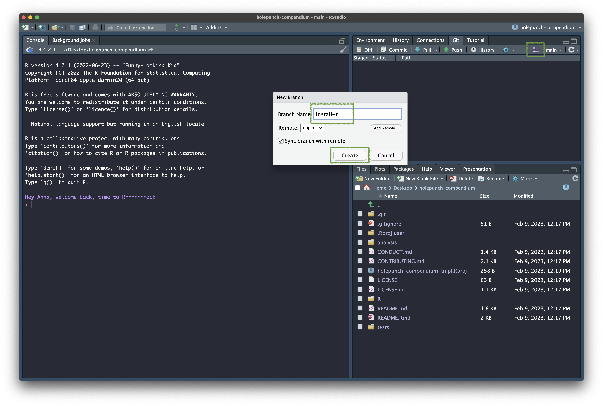
You should now be in the install-r branch.
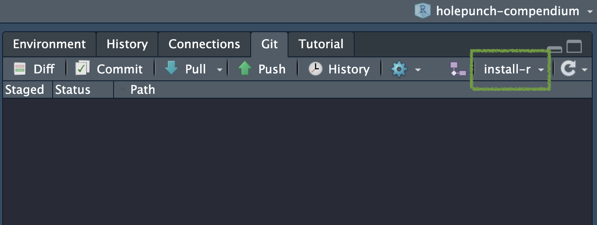
Create install.R file (RStudio)
The next stage is to create an install.R file. This is an R script that is run when building our computational environment and should contain code to install all necessary packages.
You could this manually but holepunch provides the nifty function write_install() that not only creates the file but also scans the project for dependencies and populates the file with the code to install them!
✔ Writing './.binder/install.R'
.binder
└── install.RThe function creates and writes the file to a hidden .binder directory.
If you open the file, you will see a character vector of all the packages required to reproduce our paper was created and wrapped in the install.packages() function.

Create runtime.txt file (RStudio)
The runtime.txt is effectively the file that freezes the versions of R and any packages installed in time.
By adding r-<YYYY>-<MM>-<DD> we are effectively telling binderhub that we want an R environment created with the version of R and any packages specified in install.R that were current on the date specified installed. We can also request a specific version of R with r-<version>-<YYYY>-<MM>-<DD>.
For dates prior to 2022-01-01, R and packages are installed from snapshots on MRAN. However, MRAN will be shutting down however in July.
If we request R 4.1 or later, or specify a snapshot date newer than
2022-01-01, packagemanager.rstudio.com is used to provide much faster installations via binary packages.
Holepunch provides another nice function, write_runtime(), for creating the file and also configuring it with today’s date.
.binder
├── install.R
└── runtime.txt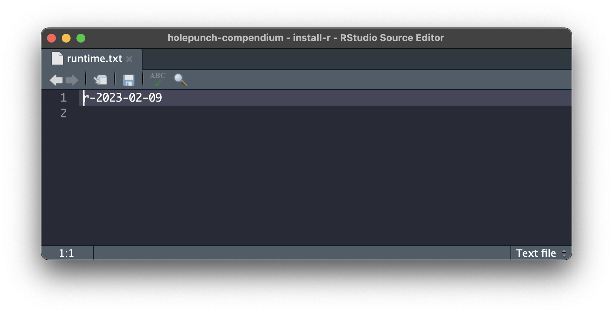
Create postBuild file (RStudio)
There’s one last thing we need to take care of. In my tests I found that, for some reason, there was a problem with Tex installation in the binder environment that was preventing successful rendering of our paper to pdf.
Re-installing TinyTex which is used by the rticles package through package bookdown seemed to fix this issue.
It would be nice if somebody launching our binder did not have to do this manually (and would save us having to document the step also!)
Luckily there is another configuration file available to us we can use, postBuild!
There isn’t a holepunch function for this so let’s create it manually in the .binder/ directory.
file.create(".binder/postBuild").binder
├── install.R
├── postBuild
└── runtime.txtpostBuild (with no file extension) is a script that can contain arbitrary commands to be run after the whole repository has been built. To make it a shell script we use #!/bin/bash at the top. Then we tell it to run the R command tinytex::install_tinytex(force = TRUE) in the next line.
#!/bin/bash
R -e "tinytex::install_tinytex(force = TRUE)"Your file should look like this:
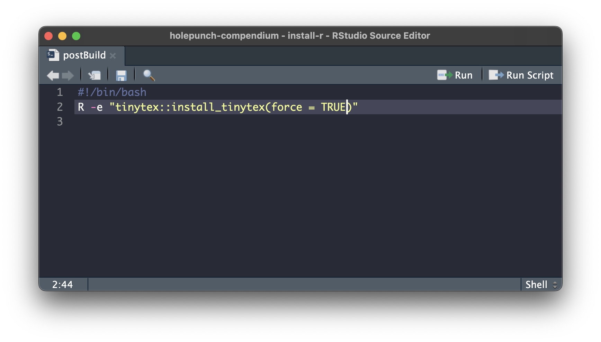
Generate badge!
Now it’s time to generate our badge to include in our README!
We use function generate_badge() and set the branch argument to install-r.
generate_badge(branch = "install-r")✔ Setting active project to '/Users/Anna/Desktop/holepunch-compendium'
• Copy and paste the following lines into 'README.Rmd':
<!-- badges: start -->
[](https://mybinder.org/v2/gh/annakrystalli/holepunch-compendium/install-r?urlpath=rstudio)
<!-- badges: end -->
[Copied to clipboard]Once generated, the badge is now on our clickboard, ready to be pasted in our README. So let’s:
Open
README.Rmd.Paste the badge at the top of the file (below the YAML header).
Knit the document to create
README.md.
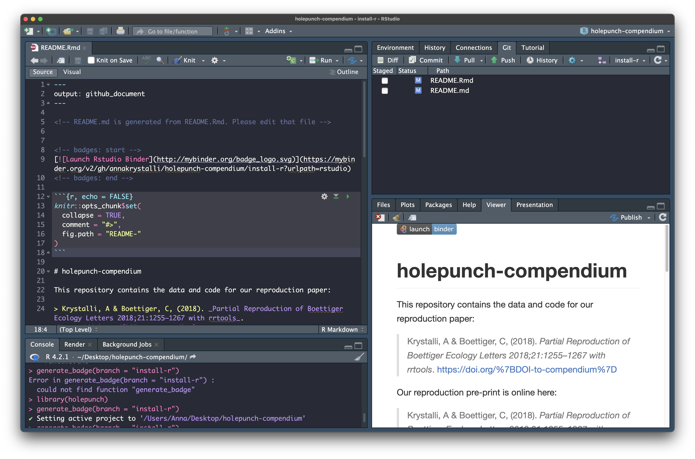
Commit Changes (RStudio)
Let’s now commit everything and push to Github!

Click badge, generate binder (GitHub)
Let’s head back to our repo and specifically the install-r branch:

Once on the correct branch, scroll down to the README and click the binder badge
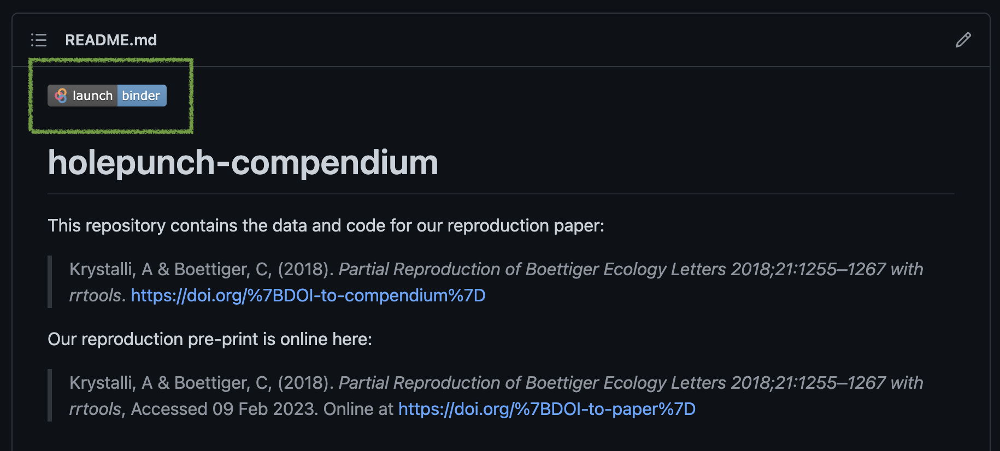
That’s it!
This now takes you to mybinder.org which will start preparing an interactive instance of your repository!
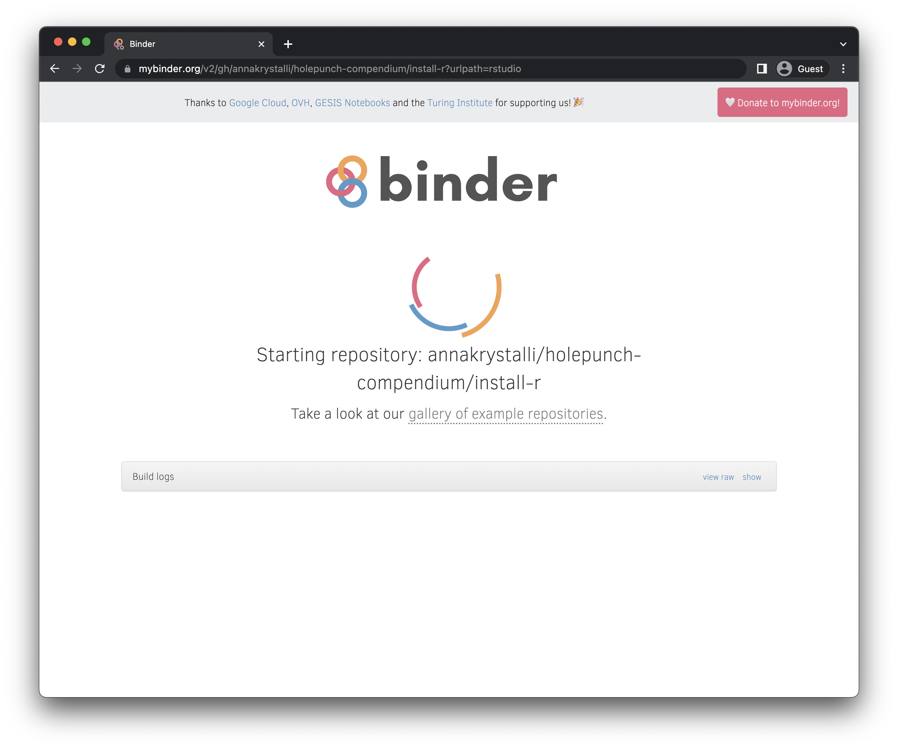
What’s going on in the background?
Binder is using the configuration files provided and software called
repo2Dockerto create a Dockerfile, a recipe for your computational environment.Binder is using the Dockerfile to create a binder image, with all the software described in your configuration file installed. This takes some time but, once completed, binder will save the image so the next time you re-launch, this stage will be a lot faster.
Binder will then use the image to launch an interactive container on JupyterHub in which we can interact with the code and data in our repo!

Once our container is ready, binder launches our repo in an instance of Rstudio Server. We can can now reproduce our paper in Binder!

So let’s head to analysis/paper/paper.Rmd and open that file. At the top of the left hand panel, click on Knit. (and click yes to update the rmarkdown package if asked)
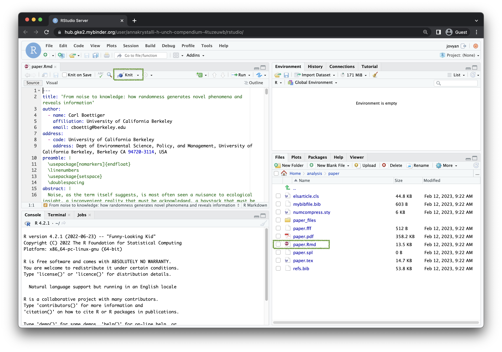
If everything went well, you should now see a rendered pdf of our paper! Reproducibility accomplished!

Binderise with Description & Dockerfiles
Another way we can binderise our projects using holepunch is by:
Managing dependencies through a
DESCRIPTIONfile.Creating our environment using our own
Dockerfile.
This method is tied to setting up your project as a research compendium.
If you are unfamiliar with the idea of research compendia, I highly recommend reading this paper by Marwick et al:
Marwick B, Boettiger C, Mullen L. 2018. Packaging data analytical work reproducibly using R (and friends) PeerJ Preprints 6:e3192v2 https://doi.org/10.7287/peerj.preprints.3192v2
Also check out package rrtools that can help you package your research projects as research compendia as well the following tutorial which is how the materials we are working with were initially put together as a research compendium, using rrtools.
Create docker branch (RStudio)
Let’s go back to RStudio.
We’ll again work on a separate branch. We want to branch off main again so first let’s go back to main by checking it out in the RStudio git panel:
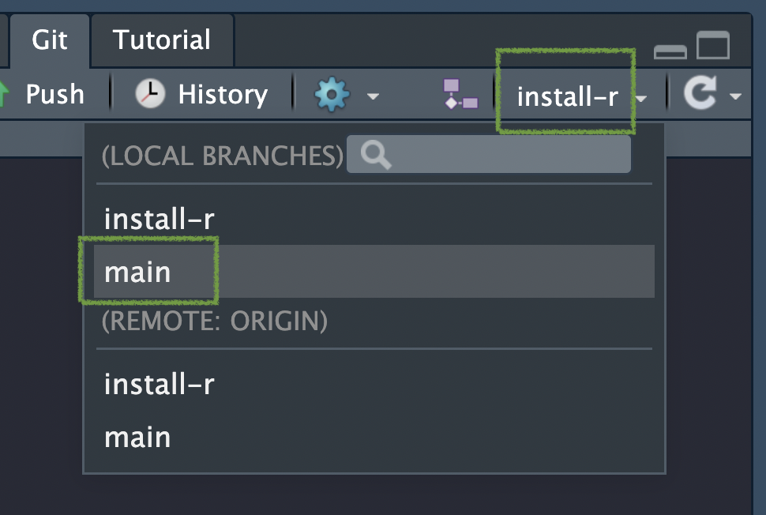
You should now be in the main branch.
Next let’s follow the same
Create compendium DESCRIPTION file (RStudio)
The DESCRIPTION file is a key file in R packages containing metadata. One of these metadata is also a list of package imports. We can therefore use this facility to list our dependencies in a DESCRIPTION file.
holepunch has another function for creating an appropriate DESCRIPTION file for our compendium. It will again scan our repository for dependencies and list them in the Depends: section.
The description file effectively allows us to turn our compendium into a package. So we need to give it a package name and description.
write_compendium_description(package = "holepunchCompendium",
description = "Binderised Research Compendium in R created using holepunch")Finding R package dependencies ... Done!
✔ Writing './DESCRIPTION'
ℹ Please update the description fields, particularly the title, description and authorA DESCRIPTION file is created in the root of our directory. Let’s open it up.
There’s some additional fields to fill in. Go ahead and complete them for posterity.
Here’s what my finished version looks like:
Type: Compendium
Package: holepunchCompendium
Title: Binderised Research Compendium in R created using holepunch
Version: 0.0.1
Authors@R:
person("Anna", "Krystalli", , "annakrystalli@googlemail.com", role = c("aut", "cre"))
Description: Binderised Research Compendium in R created using holepunch
License: MIT
Depends:
dplyr,
ggplot2,
ggthemes,
here,
knitr,
readr,
rmarkdown,
rticles
Encoding: UTF-8
LazyData: trueFeel free to copy and edit. Just make sure it still remains a valid YAML file format (i.e. errors in indentation can make the file unreadable!
repo2docker can now use this file to install our dependencies. To pin the versions of our dependencies we could just include another runtime.txt and be done.
I want to show you a different approach offered by holepunch so you are aware of it.
Create compendium Dockerfile (RStudio)
In the first approach to binderise our project, repo2docker created a Dockerfile in the background and used it to build us a computational environent.
We can however by pass that step by providing our own Dockerfile and holepunch has function write_dockerfile() for doing this.
We need to provide it with the name of the Dockerfile maintainer and again we specify the branch we are working in:
write_dockerfile(maintainer = "Anna Krystalli", branch = "docker") ✔ Setting active project to '/Users/Anna/Desktop/holepunch-compendium'
[1] TRUE
→ Setting R version to 4.2.2
→ Locking packages down at 2023-02-09
✔ Dockerfile generated at ./.binder/Dockerfile
Warning message:
In write_dockerfile(maintainer = "Anna Krystalli", branch = "docker") :
The version of R matching the last modified file in this project is 4.2.2 and is
the one being used in your Dockerfile. However, you are running 4.2.1 locally.
Assuming your code runs without errors, it might be ok to leave the Dockerfile at
4.2.2. But if you wish to stick to your local version, you can re-run this
function with a fixed date using r_date.We’re getting a warning that the version of R pinned to the Dockerfile by today’s date is later than the one I have installed. I could correct this if I thought it would be a problem by specifying an earlier date using the r_date argument. But I know it’s not an issue so the version current for today’s date will work fine.
Let’s have a look at the contents of the file:
FROM rocker/binder:4.2.2
LABEL maintainer='Anna Krystalli'
COPY --chown=${NB_USER} . ${HOME}
USER ${NB_USER}
RUN wget https://github.com/annakrystalli/holepunch-compendium/raw/docker/DESCRIPTION && R -e "options(repos = list(CRAN = 'http://mran.revolutionanalytics.com/snapshot/2023-02-12/')); devtools::install_deps()"
RUN rm DESCRIPTION.1; exit 0What this is effectively doing is:
pulling the latest
binderimage (version 4.2.2) maintained by therockerproject from dockerhub.Copying the contents of our repository into the container and giving appropriate rights
Setting the user to
NB_USERFollowing that is fetching the DESCPRIPTION file from our repo
It is then running an R command to install the dependencies listed in our DESCRIPTION files with the command
devtools::install_deps().Note that the versions are pinned to today’s date through setting the
reposoption tohttp://mran.revolutionanalytics.com/snapshot/2023-02-09/through commandoptions(repos = list(CRAN = 'http://mran.revolutionanalytics.com/snapshot/2023-02-09/'))
Edit Dockerfile
There are a couple amendments to the Dockerfile we need to make:
First, there is a problem with the latest binder image with the installation of RStudio server. Change the version of the binder image to
rocker/binder:4.2.0for it to work.Next let’s add our command to install tinytex to our sequence of R commands, after
devtools::install_deps()like so:devtools::install_deps(); tinytex::install_tinytex(force = TRUE)
FROM rocker/binder:4.2.0
LABEL maintainer='Anna Krystalli'
COPY --chown=${NB_USER} . ${HOME}
USER ${NB_USER}
RUN wget https://github.com/annakrystalli/holepunch-compendium/raw/docker/DESCRIPTION && R -e "options(repos = list(CRAN = 'http://mran.revolutionanalytics.com/snapshot/2023-02-09/')); devtools::install_deps(); tinytex::install_tinytex(force = TRUE)"
RUN rm DESCRIPTION.1; exit 0Generate badge (RStudio)
Just like before let’s generate our badge, this time for branch docker.
generate_badge(branch = "docker")• Copy and paste the following lines into 'README.Rmd':
<!-- badges: start -->
[](https://mybinder.org/v2/gh/annakrystalli/holepunch-compendium/docker?urlpath=rstudio)
<!-- badges: end -->
[Copied to clipboard]Just like before:
Open
README.Rmd.Paste the badge at the top of the file (below the YAML header).
Knit the document to create
README.md.
Commit all changes
Again commit all changes and make sure to PUSH TO GITHUB.
Build Binder
Another convenience function offered by holepunch is build_binder()
This function builds binder in the background and once an image is ready, will open the Binder URL
Let’s go ahead and use it:
ℹ Your Binder is being built in the background. Once built, your browser will automatically launch. You can also click the binder badge on your README at any time.
Hey Anna, welcome back, time to Rrrrrrrrock!
Hey Anna, welcome back, time to Rrrrrrrrock!
Hey Anna, welcome back, time to Rrrrrrrrock!Reproduce paper in mybinder
As we did before with the install-r approach, let’s reproduce our paper:
open
analysis/paper/paper.RmdKnit!
You should be again looking at a successfuly rendered pdf version of the paper!
Merge your favourite approach into main
We’ve played around in two separate branches. Let’s now merge our preferred approach into the main branch.
I recommend merging the install-r branch.
That’s because of the current limitations of the Dockerfile approach:
the problem with the latest
rocker/binderimage it is based on.the fact that
holepunchstill usesMRANsnapshots in it’s Dockerfile to pin versions. As mentioned this will be obsolete in July 2023. I’ve opened an issue in the package so hopefully this will be fixed soon.Overall I just wanted you to be aware of this approach in case you are well versed in Docker and would prefer to configure your projects with Dockerfiles.
Merge install-r into main (GitHub)
Go to the
install-rbranch and click ContributeOpen a pull request
Merge pull request
Pull main branch locally (RStudio)
Checkout the
mainbranch.Pull
Correct badge
Change the URL in the badge in the README.Rmd to point to the main branch:
[](https://mybinder.org/v2/gh/annakrystalli/holepunch-compendium/main?urlpath=rstudio)Re-render README.Rmd, commit changes and push!
You’re repo is now all set up!